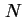
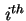
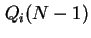
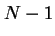
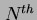
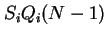
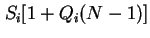
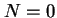
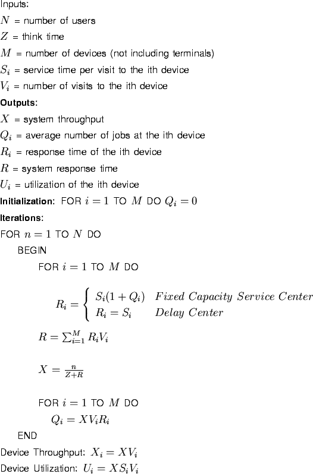

Next: ตัวอย่าง:
Up: การวิเคราะห์ค่าเฉลี่ย (Mean Value Analysis)
Previous: ตัวอย่าง
Contents
Index
การวิเคราะห์ค่าเฉลี่ย (Mean Value Analysis)
เป็นเทคนิคในการใช้วิเคราะห์เครือข่ายคิวแบบปิด โดยวิธีการที่คล้ายกับการวิเคราะห์เครือข่ายคิวแบบเปิดในบทที่ผ่านมา ซึ่งเทคนิคดังกล่าวเป็นการหาค่าเฉลี่ยต่างๆ เท่านั้น ซึ่งไม่สามารถทราบค่าความแปรปรวนได้ วิธีการวิเคราะห์ค่าเฉลี่ยสามารถใช้กับการบริการหลายรูปแบบ และ การกระจายของเวลาบริการหลายลักษณะ อย่างไรก็ตามในบทนี้จะจำกัดหัวข้อสำหรับระบบที่ประกอบด้วย Fixed-Capacity Service Center และ Delay Center เท่านั้น
สำหรับเครือข่ายคิวแบบปิดที่มีจำนวนงานในระบบเท่ากับ  ค่าเวลาตอบสนองที่อุปกรณ์  มีค่าเท่ากับ
ในที่นี้ค่า  คือค่าเฉลี่ยของความยาวคิวของอุปกรณ์ ที่มีจำนวนงานในระบบเท่ากับ  งาน ซึ่งมีลักษณะของสมการคล้ายกับสมการ 8.1 ของระบบเครือขายคิวแบบเปิด พิจารณาระบบที่  เข้ามาใช้งานระบบเครือข่ายคิวที่มีงานอยู่จำนวนทั้งสิ้น งาน เมื่องานที่ เข้ามาที่อุปกรณ์ งานที่ จะพบงานจำนวนเท่ากับ รออยู่ก่อนหน้า และจะต้องรออยู่ในคิวเป็นเวลาเท่ากับ  ก่อนที่จะได้รับบริการ และเมื่อรวมเวลารับบริการของงาน แล้ว เวลาตอบสนองทั้งหมดจะเท่ากับ

การคำนวณค่าประสิทธิภาพของระบบที่จำนวน ต้องการค่าประสิทธิภาพของระบบที่ภาระงานจำนวน งาน เราสามารถวิเคราะห์ระบบได้โดยการคำนวณซ้ำ โดยเริ่มจาก  และเพิ่มขึ้นจนถึง
จากกฎเวลาตอบสนองทั่วไป ค่าเวลาตอบสนองของระบบเท่ากับ
ค่าอัตราความสำเร็จของระบบสามารถหาได้จาก กฎเวลาตอบสนองที่มีการปฏิสัมพันธ์กับผู้ใช้งาน
และค่าอัตราความสำเร็จของแต่ละอุปกรณ์จะเท่ากับ
โดยใช้กฎของ Little ค่าความยาวคิวของอุปกรณ์ที่มีจำนวนงานเท่ากับ ในเครือข่ายจะเท่ากับ
สำหรับ Delay Center ค่าเวลาตอบสนองจะมีค่าเท่ากับ
การเริ่มการคำนวณทำโดยเริ่มจากค่า และค่าความยาวคิวของแต่ละอุปกรณ์เท่ากับ
อัลกอริทึ่มในการวิเคราะห์ค่าเฉลี่ยของเครือข่ายคิวแบบปิดแสดงในรูป
8.2
Figure 8.2:
อัลกอริทึ่มวิเคราะห์ค่าเฉลี่ยของเครือข่ายคิวแบบปิด
|  |
Subsections
Next: ตัวอย่าง:
Up: การวิเคราะห์ค่าเฉลี่ย (Mean Value Analysis)
Previous: ตัวอย่าง
Contents
Index
Vara Varavithya
2002-03-09